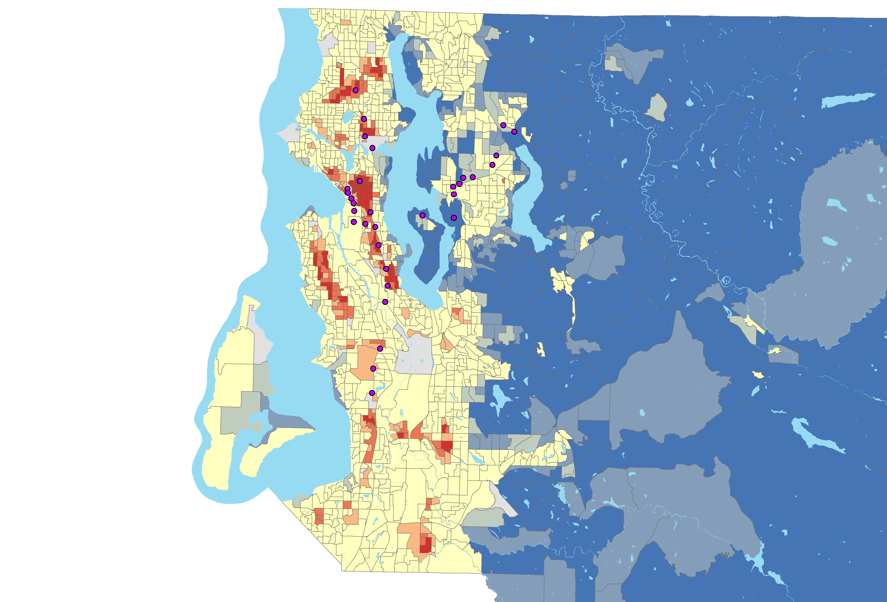

The project was planned using a multiple step process over the course of a few months. Initially there was a goals statement or project proposal that outlined the basics of the project. Next, there was a period of studying material related to light rail projects in Seattle to understand better why and where access should be. There was also a peer review at this time to obtain input from other people about the project. Then finally a workflow was created to outline the analysis process to facilitate the process and make it go smoother. After that the analysis began and the project became fully formed.
Next, details about the project are listed. The extent for this project is the Greater Seattle Area which includes areas South, North, and East of Lake Washington. The projection used throughout the project is NAD 1983 HARN StatePlane Washington North (US Feet) and the geographic coordinate system is GCS North American 1983 HARN. The enumeration unit used for the population and median household income is block groups; parcels are used for finding land value and vacant lots.
The data needed for finding where light rail is needed most is as follows: population density, household income, roads, and locations of bus stops, light rail stations and park and rides. This data is used to analyze where the need is greatest for increased public transit. The public transit and transportation data was obtained from Sound Transit and the King County GIS Data Portal. Accessing the most appropriate public transit data was a concern in the beginning of the project. When Sound Transit was contacted through email, they responded with links to the necessary data. The median income, population, and block group data came from the U.S. Census. For comparing where the need is compared to rail lines, the locations of the current and proposed stations is used to create service areas for the time it takes to walk to each station with network analysis.
The first step in the project was preparing the data for analysis. The data needed to be clipped to the King County base map since that is the area of focus. Roads, park and rides, bus stops, block groups, and Link Light Rail stations were clipped to the King County boundaries. After that the income and population data was prepared in Excel by cleaning up the tables and getting them ready to be joined to the King County block groups polygons. After the income and population data was joined to the block groups polygon, population density was calculated. Once the data was in the shapefile, then they were classified to create an index. The population data was broken into five classes with one being low density and five being high density. Whereas the income data used five classes where one was high income and five being low income. The two numbers were then added together to create an index from two through ten. This was done to find the areas where there is low income and high population density. Hot spot analysis (Getus-Ord Gi*) was used to find clusters of places where there is high density and low income. This resulted in a map with hot and cold spots depending on where the values clustered. Some of the block groups did not contain data about income, so there are some gaps in the population and income index map.
Figure 1: Hot spot map of the population density and income index.
The land value map was done in a similar way with hot spot analysis. The parcel shapefile contained the land value data, so spatial join was used to join the parcels to the block groups. The block groups then have the average land value across all parcels inside the specific block group attached. After the average land value is calculated, then hotspot analysis was used to find hot and cold spots across King County.

Figure 2: Service areas around each Park and Ride in King County based on driving.
In order to prepare for the network analysis, new fields were created in the King County roads feature to prepare for the network analysis. These fields are the length of each road in miles, drive time in minutes for service areas, and walk time in minutes for service areas. Using the calculate geometry tool, the length was calculated in miles and stored in the appropriate field to be used in the network analysis later. After these fields are added it leads to calculating drive time in minutes and walk time in minutes for each segment of road. The calculation for drive time is based on the fact that time = distance / rate. For the drive time in minutes the length in miles was divided by the speed limit for each segment of road. For calculating walk time in minutes the length of the road segments in miles was divided by 3 MPH (assumed walking speed). After the new fields were populated it was time to set up the network dataset. The network analysis was set up to merge the polygons by break value. The break values were 1, 2, 4, 8, 16, 32, 64, and 128 minutes. This was done for both walk time and drive time. One limitation of the project is that there is no distinction between the types of roads for the network analysis, so the walk time calculations may use highways or roads where people would not normally walk.
Vacant lot data was used from the King County data portal to locate the vacant parcels in King County. The way the data is set up, it is difficult to know which lots are exactly vacant because the data does not explain itself well enough. The data with vacant parcels was joined to a shapefile with the locations of all parcels in King County. Then the parcels that are labelled vacant were exported to a new shapefile to highlight their locations. Another limitation is the vacant parcels. Since the vacant lot data came from a table with not much documentation on it, it was difficult to know which parcels are vacant.
Continue to Results